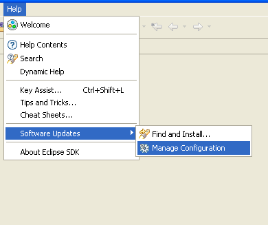
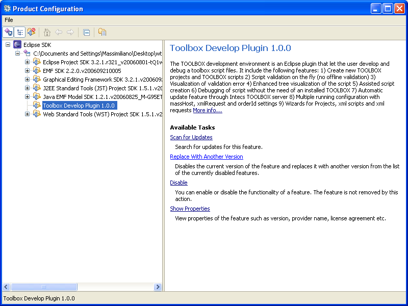
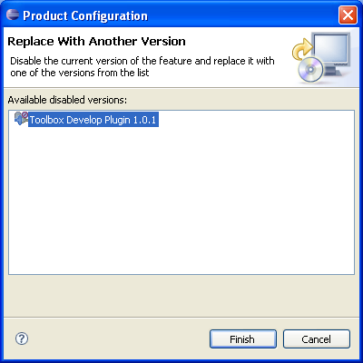

To upgrade a develop plugin installed with the offline procedure, open a web browser and open the following web page: http://toolbox.pisa.intecs.it/download/editorVersionInfo.jsp
Download all packages and unpack them to the eclipse directory. All contained objects are unpacked automatically in the correct position. Now start Eclipse.
NOTE: the following procedure describes steps for upgrading version 1.0.0 to 1.0.1. Upgrading to another version (higher version) can be obtained following the same steps.
Click on the "Help" menu and select "Software Updates/Manage Configuration".

In the opened frame, open the extension repository and select the Toolbox Develop Plugin. Click on the "Replace with another version" link.

A new frame is shown with all versions available for the selected plugin. Select the new version and click "Finish". The plugin is updated.

If Eclipse asks for a restart, click on "Yes".